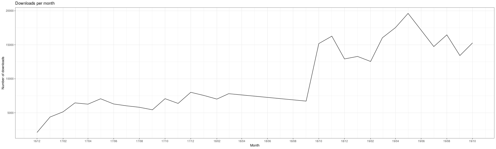
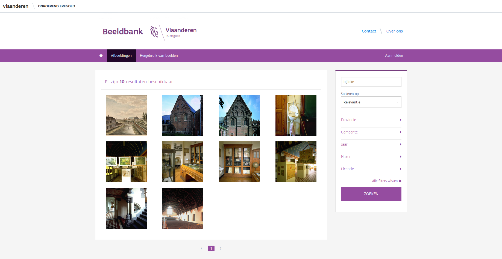
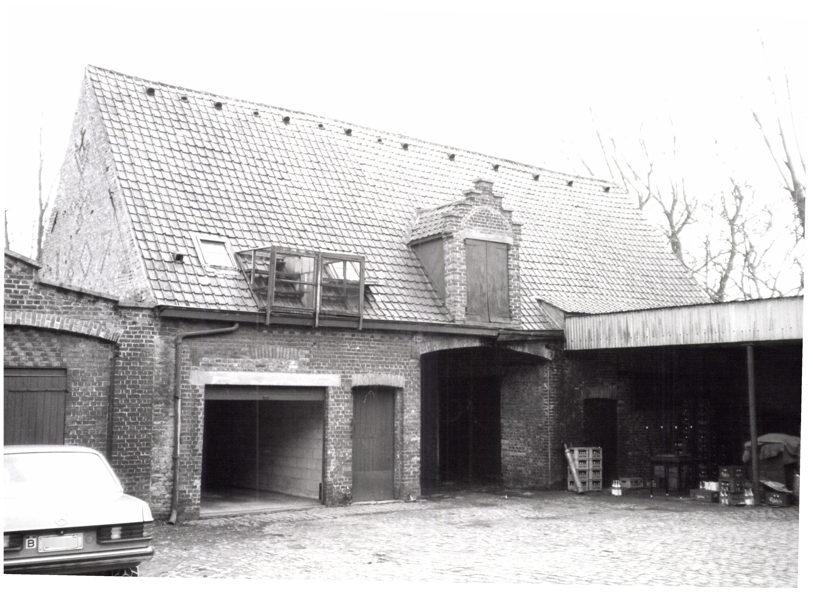
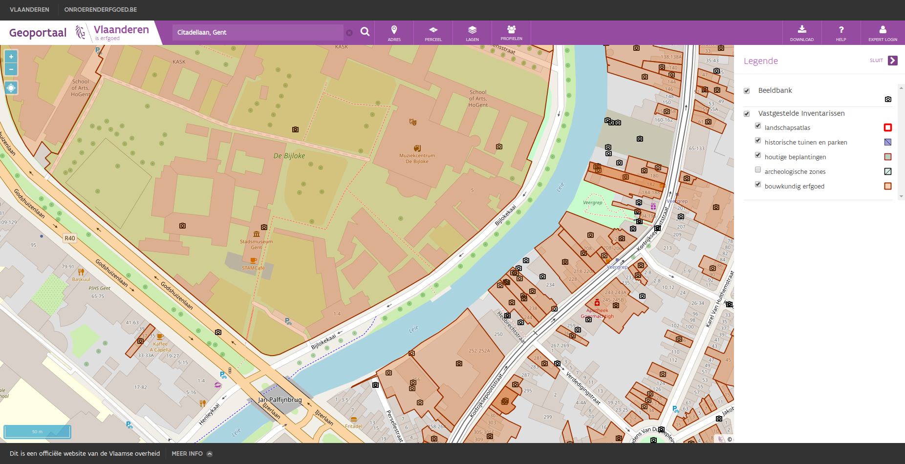
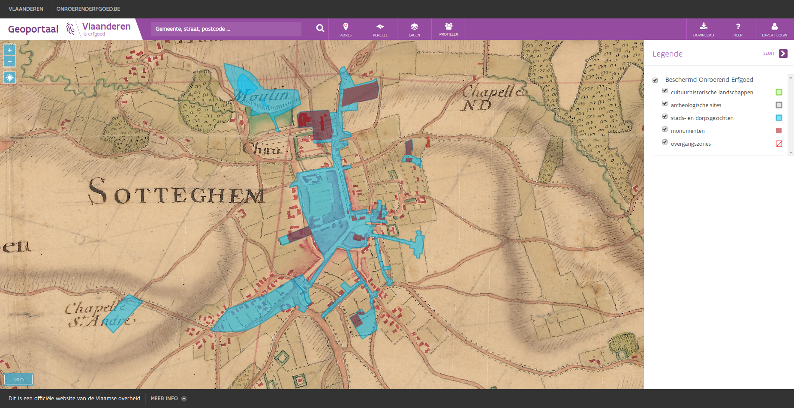
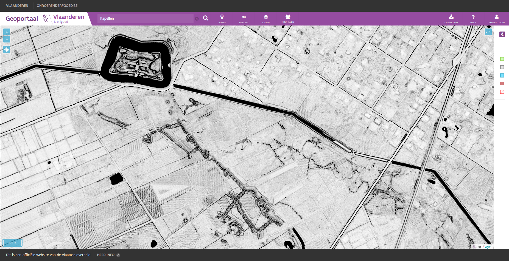

Flanders Heritage Agency is a government agency and scientific institution. We are responsible for architectural, archaeological, landscape and maritime heritage. Today we are present at the Ilucidare Playground: Cracking the future of heritage. We assimilate innovation to improve the preservation of heritage, to enhance decision-making, to support the management or to provide information to a broad public. To this end, we are mixing new technologies or new paradigms with our care and responsabilities for heritage. Today we focus on a few tangible results of this innovation driven approach that demonstrate how well heritage, technology and digitisation match.
While innovation often comes to mind when we are talking about technology, our society is innovating constantly as well. Sometimes it drives the technological advances, sometimes it follows them. One of the innovative approach of the past decade has been the shift towards openness. Open source software, open data and open access are key in today’s information driven society. Both Flanders Heritage and the Flemish Government are in favour of open data and open access. For open data, the government has adopted the Smart Flanders Open Data Charter. At Flanders Heritage, we have published several open data sets, such as our thesauri and controlled vocabularies, under the Flemish open data license. Not only do we publish those thesauri as open data, we also publish the software to maintain them as open source software.
When it comes to scholarly open access we strive to make all our publications publically available, free of charge. Nearly all research output gets published at OAR, our Open Access Repository. The past years we have invested in digitising publications by our predecessors. We now have an online publication archive going back to the eighties. All these publications can be freely downloaded and accessed. While digitisation might seem like a a trivial matter (scan it and put it online), it has taken quite a lot of time and effort due to factors such as copyright and the effort it takes to create good metadata. But the end result has been worth the effort. We have found that in today’s digital world, knowledge and information are at risk of becoming obsolete if not available in the way people expect them to be. By digitising older information sources, we give them that little push, that little bit of innovation, to make them relevant in today’s roaring digital twenties. Our download statistics prove that this has very much been appreciated. Ever since we digitised and published our back catalogue, the number of downloads per month has doubled. We now have about 15.000 publications that are digitally consulted every month.
Number of downloads per month from OAR
While our publications are still very much an information channel that spreads written information, today an increased importance is placed on visual information. Where 20-30 years ago digital mostly meant textual information (anybody remember ASCII art?), today a lot of emphasis is placed on digital media: audio, video and images (mostly of cats it seems). While audio and video is still a fairly rare format for us, images have always been a staple in our information diet. Heritage professionals have been documenting heritage and its current state ever since cameras became available. The rise to prominence of digital cameras and more recently smartphones with a good camera has only accelerated this process. We estimate that within our agency a few million pictures are circulating in both analog and digital formats. In 2019 we launched a new online image database containing some 280.000 images of heritage in Flanders. Some of them recent, some of them digitised from analog sources in our archives. Again, a lot of importance was placed on reuseability. Where possible, they are published under an open data license allowing reuse, even for commercial purposes, as long as attribution is guaranteed.
A set of images in the image database found by searching for `Bijloke`
Our system has been running for a while now and has proven that our basic needs have been covered. We are now looking into a few more complex problems. For starters, there are issues dealing with GDPR and privacy. While our pictures are taken in publically accessible locations, certain information visible is considered sensitive data. This is mainly the case when license plate numbers or people’s faces are visible. While we do have manual procedures in place to check for these things, they are time consuming and require a lot of manual energy. We are now looking into automatic recognition and, if possible, automatic blurring of license plate numbers and faces using the OpenCV library. So far we have had very good results with the license plates, but more mixed results with the faces. We attribute this to the license plate formats being rather simple and predictable. With facial recognition, we are facing issues that might be more typical of our line of work. The automated detection of faces is a bit too eager and has a tendency to detect works of art like paintings, sculptures or billboard as human faces as well. Further work will be needed to finetune this enough to make it fit for large-scale use.
The license plate on the left was automatically blurred with OpenCV
Another avenue we are pursuing is automated detection of duplicate pictures. As is often the case in large organisations, files are distributed, copied and mailed over and over again. Images are no exception to this rule. An image ends up being present in different locations. All these duplicates cost storage space, which can be quite expensive. Since every image requires metadata, this also leads to duplication of metadata and the effort of creating it. We are now looking into ways of automatically detecting duplicate images. So far, the technique of image hashing has proven to be very interesting and we will probably settle on the dHash algorithm. Currently we are investigating how to properly integrate this in our image archiving workflows so our colleagues gain all the benefits of this technique without being confronted with the technical details. One could argue that innovation only becomes productive when it goes hand in hand with useability.
As a government agency dealing with immovable cultural heritage, almost all data we collect have some spatial component. Our images are no different. Almost every picture we take, is a picture of some kind of immovable cultural heritage, be it an archaeological sites, a cultural landscape, a building, a cemetary or another form of heritage. So we made a substantial effort to geolocate the images in our image database. For older images, we linked them to the heritage objects they depict and copied their location. For newer images, we are relying on the automatic geolocation present in modern day smartphones and digital cameras. The resulting GIS layer consists of point locations of most of our images and can easily be visualised on our geoportal or downloaded for your own use. For every picture you can then click through to the image database to find out more about it, download it and reuse it - provided you adhere to the license.
A view of the Bijloke site in Ghent with all known images of this area.
As we have stated, almost everything we do has a spatial component. For us, maps are essential. Today, that means GIS is essential to us. As a government agency we publish INSPIRE compliant datasets that get distributed through the INSPIRE network across Europe. This is mostly aimed at the professional GIS user, using his or her own desktop software. But we felt that we were lacking a certain part of our target audience. People wanting to quickly find out what information we had for their neighbourhoods or properties or just that place they knew as a child or passed yesterday. To this end, we created our own Geoportal, a simple website where a user can consult a (hopefully) intuitive map of Flanders and see what kind of heritage is present. We purposefullly built this portal for regular, non-GIS users. We wanted to make it feel like Google Maps for Heritage. While it’s no longer a new tool, it’s still very popular among our users. Because we focus on presenting our own data as best as possible, the interface is optimised for people looking for spatial data on heritage, as opposed to just any spatial data. Those people we gladly refer to Geopunt, a geoportal for all spatial data produced by the Flemish Government. It contains far more data than we need, but its use is not optimised for heritage information and it might take longer to find exactly that piece of information you’re looking for.
The current day city of Zottegem and its listed heritage as seen on the Villaret map (1745-1748)
If you visit the Geoportal for the first time, you will be asked to choose one of two profiles. These are preset combinations of map layers. One shows a good default selection for most people, the other one offers combinations optimised for users mostly interested the legal ramifications of heritage. This is mostly used by actuaries, real-estate agents, property developers, other governments, … If you’re not satisfied by the default map layers loaded, you can always load other information layers or base layers. Some of these provide you with links to our other systems, such as the image database we mentioned before or datasets of archaeological report that are submitted by archaeologists and published by us. Among the base layers are several different orthofotographic layers, but also historical maps. In our portal, users can consult maps dating as far back as the 18th and 19th centuries. Some of these were provided by Information Flanders. Others, like the Villaret map (1745-1748) were digitised by ourselves in cooperation with them.
Have a look at our portal and browse the map. Look at places you’ve seen, read more about them and their history and browse the pictures we’ve collected!
The city of Damme and its fortifications as seen on the multidirectional hillshade
To wrap up, we present a final mapping related project. A while back, our colleagues at Flanders Information Agency created a dataset called Digitaal Hoogtemodel Vlaanderen (DHMV). This set of LIDAR data consist of a Digital Surface Model (DSM) and a Digital Terrain Model (DTM). Together these datasets provide height related data and allow us to visualise the terrain in Flanders in different ways. While the raw data is available as open data, it takes quite a bit of knowledge and expertise to visualise this data in a useful way. To reduce the burden for most casual users, a few standard renderings have been available for a while. While interesting, we knew it was posible to create more visualisations suitable for archaeologists. These would allow easier detection of archaeological sites, based on micro-topology. To this end, Flanders Heritage and Flanders Information collaborated to create two new renderings of the DHMV and publish them. Each rendering uses different techniques and parameters. Depending on the kind of features you are looking for, one will suit you better than the other.
Trenches and a fortress near Kapellen as seen on the skyview factor
The final result has proven to be insightful and very useful to archaeologists in their day to day job. By glancing at these two layers, either at our Geoportal or as a download in their own GIS, they can quickly judge potential features of a site or location they are researching. If you want to see it in action, head over to the Geoportal and select them under Lagen > Achtergrondlagen > Digitaal Hoogtemodel > DHMV II, multidirectionele hillshare or DHMV II, skyview factor. This project has proved to be more succesful than we ever imagined possible. The results have even gone beyond the archaeological or cultural heritage sector it was initially aimed at. We have even received nominations for a Datanews ICT Project of the Year and an Agoria e-Gov Award Open Data.
We hope that we have proven that there is a strong synergy between heritage and technology as we make our way into the 21st century. As every organisation, technology has become more and more ingrained in our day to day operations. As Satya Nadella, the CEO of Microsoft, recently said: Every company is now a software company. The same holds true for a government agency or a cultural heritage institution. Software is everywhere. Digital is everywhere. And even though our cultural heritage is still largely an analog product, the information sources and tools we use to study it, no longer are and never again will be.
If you have further questions, feel free to contact us, check out the rest of this blog, have a look at our open source projects or website.